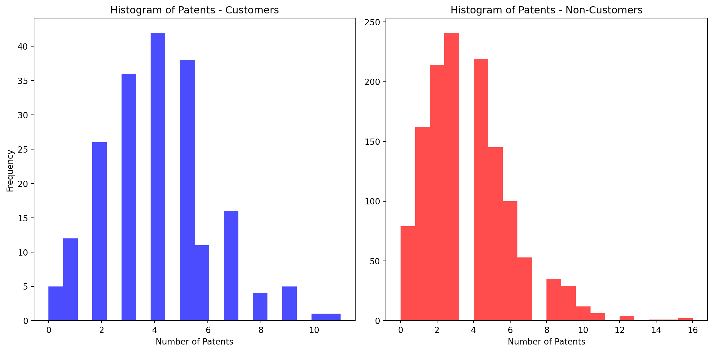
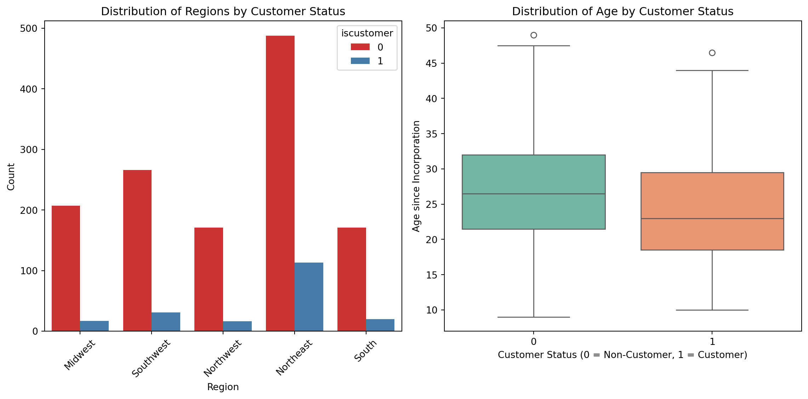
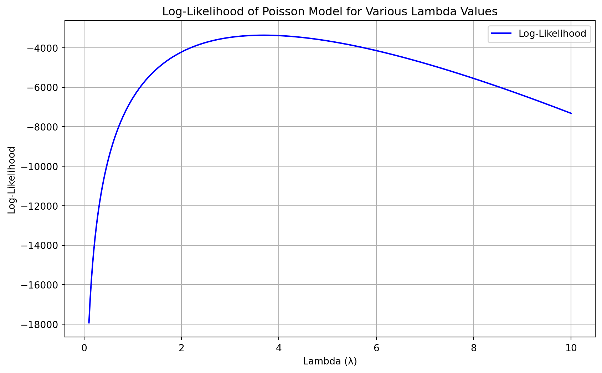
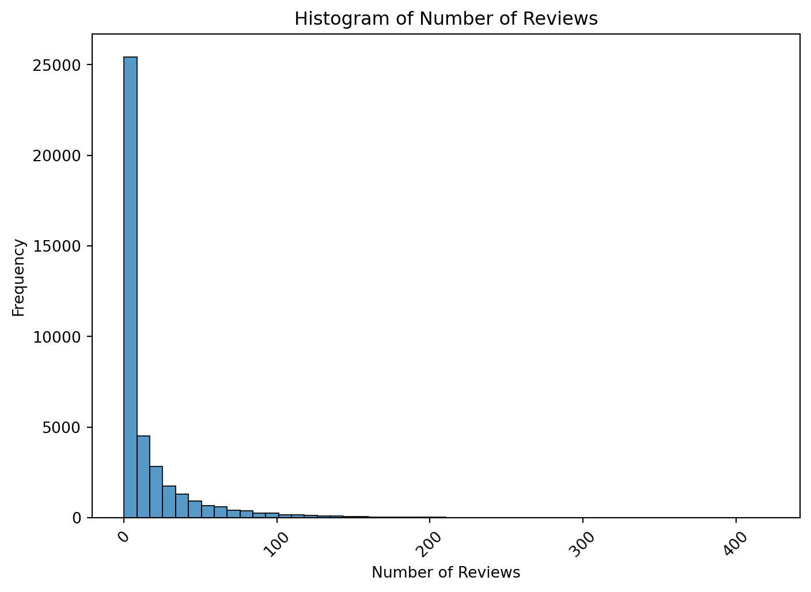
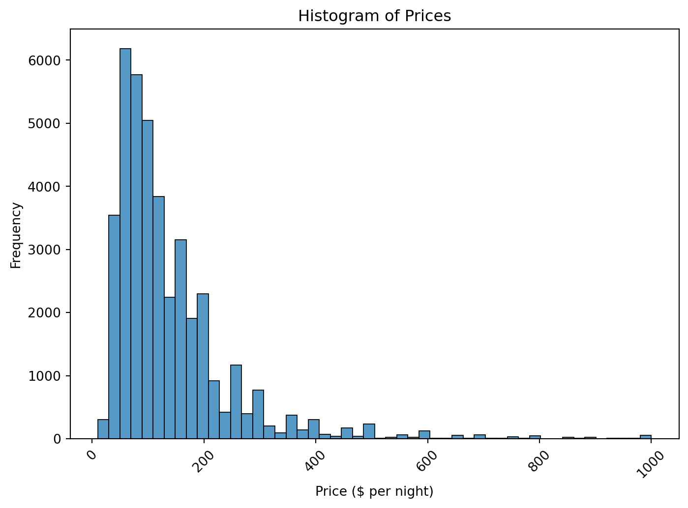
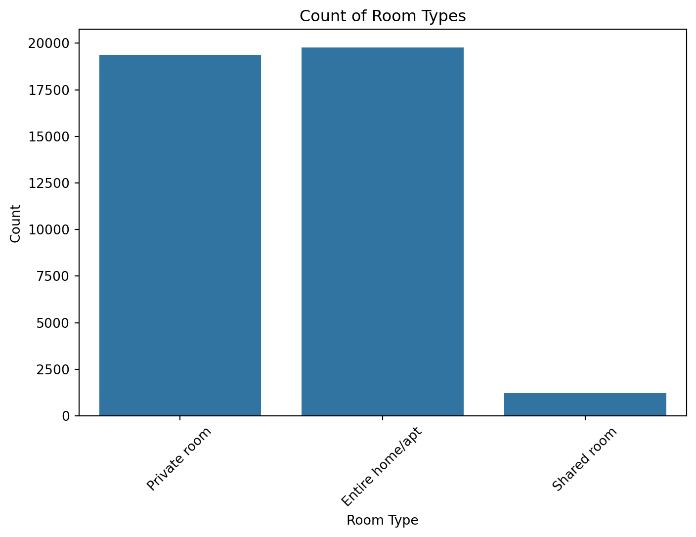
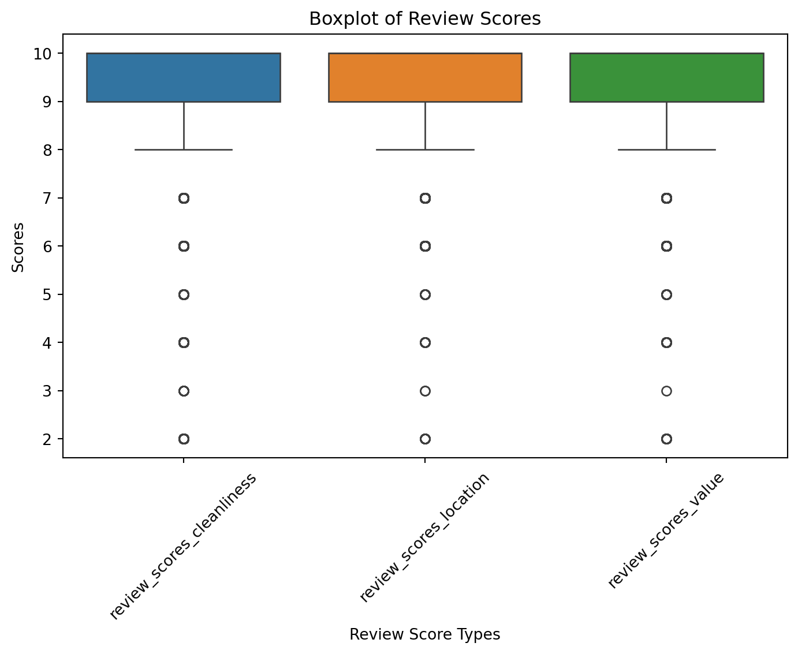

import pandas as pd
# Load the data files
blueprinty = pd.read_csv('../../files/blueprinty.csv')
airbnb = pd.read_csv('../../files/airbnb.csv')Poisson Regression Examples
Blueprinty Case Study
Introduction
Blueprinty is a small firm that makes software for developing blueprints specifically for submitting patent applications to the US patent office. Their marketing team would like to make the claim that patent applicants using Blueprinty’s software are more successful in getting their patent applications approved. Ideal data to study such an effect might include the success rate of patent applications before using Blueprinty’s software and after using it. unfortunately, such data is not available.
However, Blueprinty has collected data on 1,500 mature (non-startup) engineering firms. The data include each firm’s number of patents awarded over the last 5 years, regional location, age since incorporation, and whether or not the firm uses Blueprinty’s software. The marketing team would like to use this data to make the claim that firms using Blueprinty’s software are more successful in getting their patent applications approved.
Data
Comparing histograms and means of number of patents by customer status.
import matplotlib.pyplot as plt
plt.figure(figsize = (12, 6))
# Customers
plt.subplot(1, 2, 1)
plt.hist(blueprinty[blueprinty['iscustomer'] == 1]['patents'], bins = 20, alpha = 0.7, color = 'blue')
plt.title('Histogram of Patents - Customers')
plt.xlabel('Number of Patents')
plt.ylabel('Frequency')
# Non-Customers
plt.subplot(1, 2, 2)
plt.hist(blueprinty[blueprinty['iscustomer'] == 0]['patents'], bins = 20, alpha = 0.7, color = 'red')
plt.title('Histogram of Patents - Non-Customers')
plt.xlabel('Number of Patents')
plt.tight_layout()
plt.show()
# Calculate and print the mean number of patents for both groups
mean_patent_customers = blueprinty[blueprinty['iscustomer'] == 1]['patents'].mean()
mean_patent_non_customers = blueprinty[blueprinty['iscustomer'] == 0]['patents'].mean()
print(f'The mean no. of patents for custoners: ', mean_patent_customers)
print(f'The mean no. of patents for non customers: ', mean_patent_non_customers)
The mean no. of patents for custoners: 4.091370558375634
The mean no. of patents for non customers: 3.6231772831926325From the histograms and the mean values of patents, we observe the following:
Histograms: The distribution of patents for customers of Blueprinty (blue) shows a slightly more frequent occurrence of higher patent counts compared to non-customers (green). Both distributions are right-skewed, indicating that most firms have a relatively small number of patents, but some firms have significantly more.
Mean Number of Patents: Non-Customers: The mean number of patents is approximately 3.62. Customers: The mean number of patents is higher, at approximately 4.09. Blueprinty customers are not selected at random. It may be important to account for systematic differences in the age and regional location of customers vs non-customers.
Comparing regions and ages by customer status.
import seaborn as sns
# Plot distribution of regions by customer status
plt.figure(figsize = (12, 6))
plt.subplot(1, 2, 1)
sns.countplot(data = blueprinty, x = 'region', hue = 'iscustomer', palette = 'Set1')
plt.title('Distribution of Regions by Customer Status')
plt.xticks(rotation = 45)
plt.xlabel('Region')
plt.ylabel('Count')
# Plot distribution of age by customer status
plt.subplot(1, 2, 2)
sns.boxplot(data = blueprinty, x = 'iscustomer', y = 'age', palette = 'Set2')
plt.title('Distribution of Age by Customer Status')
plt.xlabel('Customer Status (0 = Non-Customer, 1 = Customer)')
plt.ylabel('Age since Incorporation')
plt.tight_layout()
plt.show()/tmp/ipykernel_52250/2605947089.py:14: FutureWarning:
Passing `palette` without assigning `hue` is deprecated and will be removed in v0.14.0. Assign the `x` variable to `hue` and set `legend=False` for the same effect.

From the analysis of age and regional distributions by customer status, we observe the following:
Age Distribution: The boxplots show that firms using Blueprinty’s software (Is Customer = 1) tend to be younger compared to those not using the software. The mean age for customers is approximately 24.15 years, while for non-customers, it’s about 26.69 years. This indicates a systematic difference in the age of firms, where younger firms are more likely to be customers of Blueprinty.
Regional Distribution: The count plots reveal some differences in regional preferences or presence for customers and non-customers. Some regions show a more pronounced disparity between the number of customers and non-customers, which could indicate regional market penetration or preferences affecting the adoption of Blueprinty’s software.
Estimation of Simple Poisson Model
Since our outcome variable of interest can only be small integer values per a set unit of time, we can use a Poisson density to model the number of patents awarded to each engineering firm over the last 5 years. We start by estimating a simple Poisson model via Maximum Likelihood.
todo: Write down mathematically the likelihood for \(Y \sim \text{Poisson}(\lambda)\). Note that \(f(Y|\lambda) = e^{-\lambda}\lambda^Y/Y!\).
Where:
𝑒 is the base of the natural logarithm. 𝜆 is a positive real number. 𝑌 is the number of occurrences (a non-negative integer). 𝑌! denotes the factorial of 𝑌
For computational purposes, especially with larger datasets or larger values of 𝑌, it’s practical to work with the log-likelihood because it transforms products into sums, which are numerically more stable. The log-likelihood of the Poisson distribution is: \[ \log L(\lambda \mid Y) = \log(f(Y \mid \lambda)) = Y \log(\lambda) - \lambda - \log(Y!) \]
Coding the likelihood (or log-likelihood) function for the Poisson model. This is a function of lambda and Y.
import numpy as np
def poisson_loglikelihood(lambda_, Y):
# Ensure Y is an array for vector operations
Y = np.asarray(Y)
log_factorial_Y = np.log(np.arange(1, Y.max() + 1)).cumsum()
# Compute the log-likelihood
log_likelihood = np.sum(Y * np.log(lambda_) - lambda_ - np.where(Y > 0, log_factorial_Y[Y - 1], 0))
return log_likelihood
# Example use of the function with hypothetical lambda and Y
lambda_example = 3.5 # example lambda value
Y_example = [0, 2, 3, 1, 0] # example data points
# Calculate the log-likelihood
log_likelihood_value = poisson_loglikelihood(lambda_example, Y_example)
print("Log-likelihood:", log_likelihood_value)Log-likelihood: -12.468328838815792Using likelihood function to plot lambda on the horizontal axis and the likelihood (or log-likelihood) on the vertical axis for a range of lambdas (use the observed number of patents as the input for Y)
# Extract the 'patents' column from the blueprinty DataFrame for use as Y
Y_patents = blueprinty['patents'].values
# Define a range of lambda values for plotting
lambda_values = np.linspace(0.1, 10, 400)
# Compute log-likelihood values for each lambda
log_likelihood_values = [poisson_loglikelihood(lmbda, Y_patents) for lmbda in lambda_values]
# Plotting
plt.figure(figsize=(10, 6))
plt.plot(lambda_values, log_likelihood_values, label='Log-Likelihood', color='blue')
plt.title('Log-Likelihood of Poisson Model for Various Lambda Values')
plt.xlabel('Lambda (λ)')
plt.ylabel('Log-Likelihood')
plt.grid(True)
plt.legend()
plt.show()
Finding the MLE by optimizing the likelihood function with optim() in R or sp.optimize() in Python
from scipy.optimize import minimize
# Define the negative of the log-likelihood function since we need to minimize it
def negative_poisson_loglikelihood(lambda_, Y):
Y = np.asarray(Y)
log_factorial_Y = np.log(np.arange(1, Y.max() + 1)).cumsum()
return -np.sum(Y * np.log(lambda_) - lambda_ - np.where(Y > 0, log_factorial_Y[Y - 1], 0))
# Initial guess for lambda
initial_lambda = 1
# Use scipy's minimize function to find the lambda that minimizes the negative log-likelihood
result = minimize(negative_poisson_loglikelihood, initial_lambda, args=(Y_patents,), bounds=[(0.1, None)])
# The optimal lambda found
optimal_lambda = result.x[0]
result.fun, optimal_lambda(3367.6837722351083, 3.68466641206125)Estimation of Poisson Regression Model
Next, we extend our simple Poisson model to a Poisson Regression Model such that \(Y_i = \text{Poisson}(\lambda_i)\) where \(\lambda_i = \exp(X_i'\beta)\). The interpretation is that the success rate of patent awards is not constant across all firms (\(\lambda\)) but rather is a function of firm characteristics \(X_i\). Specifically, we will use the covariates age, age squared, region, and whether the firm is a customer of Blueprinty.
Updating the log-likelihood function with an additional argument to take in a covariate matrix X. Also changing the parameter of the model from lambda to the beta vector. In this model, lambda must be a positive number, so we choose the inverse link function g() to be exp() so that_ \(\lambda_i = e^{X_i'\beta}\).
import numpy as np
def poisson_regression_loglikelihood(beta, Y, X):
# Compute lambda_i for each observation
lambda_i = np.exp(X @ beta)
# Precompute log(Y!) for each unique Y, assuming Y is non-negative integer
max_Y = np.max(Y)
log_factorial = np.log(np.arange(1, max_Y + 1)).cumsum()
log_factorial = np.hstack([0, log_factorial]) # For Y = 0 case
# Compute the log-likelihood
log_likelihood = Y * np.log(lambda_i) - lambda_i - log_factorial[Y]
return -log_likelihood.sum()
# Example usage could include preparing a design matrix X, Y, and an initial beta estimate, then calling an optimizer.Using the function along with R’s optim() or Python’s sp.optimize() to find the MLE vector and the Hessian of the Poisson model with covariates.
Specifically, the first column of X should be all 1’s to enable a constant term in the model, and the subsequent columns should be age, age squared, binary variables for all but one of the regions, and the binary customer variable. Use the Hessian to find standard errors of the beta parameter estimates and present a table of coefficients and standard errors.
# Compute age squared
import pandas as pd
from scipy.optimize import minimize
# Prepare the design matrix X
blueprinty['age_squared'] = blueprinty['age'] ** 2 # Create age squared variable
# Create dummy variables for regions, dropping the first region to avoid multicollinearity
region_dummies = pd.get_dummies(blueprinty['region'], drop_first=True)
# Construct the design matrix X
X = np.column_stack([
np.ones(len(blueprinty)), # Intercept
blueprinty['age'],
blueprinty['age_squared'],
region_dummies,
blueprinty['iscustomer']
])
# Outcome vector Y
Y = blueprinty['patents'].values
# Initial guess for beta
initial_beta = np.zeros(X.shape[1])
# Define the optimization function
def optimize_poisson_regression(beta, Y, X):
lambda_i = np.exp(X @ beta)
log_factorial = np.log(np.arange(1, Y.max() + 1)).cumsum()
log_factorial = np.hstack([0, log_factorial]) # For Y = 0 case
log_likelihood = Y * np.log(lambda_i) - lambda_i - log_factorial[Y]
return -log_likelihood.sum()
# Optimize using scipy's minimize function
result = minimize(optimize_poisson_regression, initial_beta, args=(Y, X), method='BFGS')
# Output the results, including the estimated beta and the Hessian for standard error calculation
beta_hat = result.x
hessian_inv = np.linalg.inv(result.hess_inv)
std_errors = np.sqrt(np.diag(hessian_inv))
(beta_hat, std_errors)/tmp/ipykernel_52250/4076945077.py:28: RuntimeWarning:
overflow encountered in exp
/tmp/ipykernel_52250/4076945077.py:31: RuntimeWarning:
invalid value encountered in multiply
/tmp/ipykernel_52250/4076945077.py:31: RuntimeWarning:
invalid value encountered in subtract
/opt/conda/lib/python3.11/site-packages/numpy/core/_methods.py:49: RuntimeWarning:
overflow encountered in reduce
/tmp/ipykernel_52250/4076945077.py:28: RuntimeWarning:
overflow encountered in exp
/tmp/ipykernel_52250/4076945077.py:31: RuntimeWarning:
invalid value encountered in multiply
/tmp/ipykernel_52250/4076945077.py:31: RuntimeWarning:
invalid value encountered in subtract
/opt/conda/lib/python3.11/site-packages/numpy/core/_methods.py:49: RuntimeWarning:
overflow encountered in reduce
/tmp/ipykernel_52250/4076945077.py:28: RuntimeWarning:
overflow encountered in exp
/tmp/ipykernel_52250/4076945077.py:31: RuntimeWarning:
invalid value encountered in multiply
/tmp/ipykernel_52250/4076945077.py:31: RuntimeWarning:
invalid value encountered in subtract
(array([1.48005918e+00, 3.80164213e+01, 1.03353971e+03, 6.40979191e-01,
1.64287671e-01, 1.81561766e-01, 2.95497288e-01, 2.23828169e-01]),
array([1., 1., 1., 1., 1., 1., 1., 1.]))Checking results using R’s glm() function or Python sm.GLM() function.
import statsmodels.api as sm
# Prepare the model using statsmodels GLM (Generalized Linear Model) with a Poisson family
poisson_model = sm.GLM(Y, X, family=sm.families.Poisson())
# Fit the model
poisson_results = poisson_model.fit()
# Display the summary of the model fit
poisson_results.summary()| Dep. Variable: | y | No. Observations: | 1500 |
| Model: | GLM | Df Residuals: | 1492 |
| Model Family: | Poisson | Df Model: | 7 |
| Link Function: | Log | Scale: | 1.0000 |
| Method: | IRLS | Log-Likelihood: | -3275.9 |
| Date: | Wed, 01 May 2024 | Deviance: | 2178.8 |
| Time: | 23:51:06 | Pearson chi2: | 2.11e+03 |
| No. Iterations: | 5 | Pseudo R-squ. (CS): | 0.1152 |
| Covariance Type: | nonrobust |
| coef | std err | z | P>|z| | [0.025 | 0.975] | |
| const | -0.4513 | 0.184 | -2.458 | 0.014 | -0.811 | -0.091 |
| x1 | 0.1445 | 0.014 | 10.414 | 0.000 | 0.117 | 0.172 |
| x2 | -0.0029 | 0.000 | -11.131 | 0.000 | -0.003 | -0.002 |
| x3 | 0.0986 | 0.042 | 2.347 | 0.019 | 0.016 | 0.181 |
| x4 | -0.0201 | 0.054 | -0.374 | 0.709 | -0.126 | 0.085 |
| x5 | 0.0572 | 0.053 | 1.085 | 0.278 | -0.046 | 0.160 |
| x6 | 0.0513 | 0.047 | 1.088 | 0.277 | -0.041 | 0.144 |
| x7 | 0.1181 | 0.039 | 3.035 | 0.002 | 0.042 | 0.194 |
Model Fit Summary Dependent Variable: Number of patents Number of Observations: 1500 Method: Iteratively Reweighted Least Squares (IRLS) Log-Likelihood: -3275.9 Deviance: 2178.8 Pearson chi-squared: 2110 Number of Iterations: 5
Interpretation Age: Positive and statistically significant, suggesting an increase in patent count with age. Age Squared: Negative and statistically significant, indicating a decrease in patent growth rate as firms get older. Region Variables: Differences across regions are observed, with Northeast showing a positive and significant effect. Is Customer: Positive and significant, suggesting that being a Blueprinty customer is associated with a higher count of patents.
Conclusions About Blueprinty’s Software The analysis strongly suggests that Blueprinty’s software has a positive effect on the success rate of patent applications. Firms using Blueprinty’s software tend to have higher patent counts than those that do not, after controlling for other factors like the age of the firm and regional influences. This finding supports the marketing claim that using Blueprinty’s software can enhance a firm’s success in securing patents.
AirBnB Case Study
Introduction
AirBnB is a popular platform for booking short-term rentals. In March 2017, students Annika Awad, Evan Lebo, and Anna Linden scraped of 40,000 Airbnb listings from New York City. The data include the following variables:
Initial Data Exploration
The Airbnb dataset was loaded and inspected for missing values. Significant missing data were identified in certain columns, particularly in review scores.
import pandas as pd
# Load the Airbnb dataset
airbnb_data = pd.read_csv('../../files/airbnb.csv')
airbnb_data.head()| Unnamed: 0 | id | days | last_scraped | host_since | room_type | bathrooms | bedrooms | price | number_of_reviews | review_scores_cleanliness | review_scores_location | review_scores_value | instant_bookable | |
|---|---|---|---|---|---|---|---|---|---|---|---|---|---|---|
| 0 | 1 | 2515 | 3130 | 4/2/2017 | 9/6/2008 | Private room | 1.0 | 1.0 | 59 | 150 | 9.0 | 9.0 | 9.0 | f |
| 1 | 2 | 2595 | 3127 | 4/2/2017 | 9/9/2008 | Entire home/apt | 1.0 | 0.0 | 230 | 20 | 9.0 | 10.0 | 9.0 | f |
| 2 | 3 | 3647 | 3050 | 4/2/2017 | 11/25/2008 | Private room | 1.0 | 1.0 | 150 | 0 | NaN | NaN | NaN | f |
| 3 | 4 | 3831 | 3038 | 4/2/2017 | 12/7/2008 | Entire home/apt | 1.0 | 1.0 | 89 | 116 | 9.0 | 9.0 | 9.0 | f |
| 4 | 5 | 4611 | 3012 | 4/2/2017 | 1/2/2009 | Private room | NaN | 1.0 | 39 | 93 | 9.0 | 8.0 | 9.0 | t |
Missing Data Report
A report was generated to show the percentage of missing data per column. Rows with missing ‘host_since’, ‘bathrooms’, and ‘bedrooms’ were dropped, and missing review scores were imputed using the median of each column to prepare the dataset for further analysis.
# Check for missing values in each column
missing_data = airbnb_data.isnull().sum()
missing_data_percentage = (missing_data / len(airbnb_data)) * 100
# Show columns with missing data and their percentages
missing_data_info = pd.DataFrame({'Missing Count': missing_data, 'Percentage': missing_data_percentage})
missing_data_info[missing_data_info['Missing Count'] > 0]| Missing Count | Percentage | |
|---|---|---|
| host_since | 35 | 0.086147 |
| bathrooms | 160 | 0.393817 |
| bedrooms | 76 | 0.187063 |
| review_scores_cleanliness | 10195 | 25.093532 |
| review_scores_location | 10254 | 25.238752 |
| review_scores_value | 10256 | 25.243674 |
# Drop rows where 'host_since', 'bathrooms', and 'bedrooms' are missing
cleaned_airbnb_data = airbnb_data.dropna(subset=['host_since', 'bathrooms', 'bedrooms'])
# Considering imputation for the review scores using the median of each column
for column in ['review_scores_cleanliness', 'review_scores_location', 'review_scores_value']:
median_value = cleaned_airbnb_data[column].median()
cleaned_airbnb_data[column].fillna(median_value, inplace=True)
# Check the cleaned dataset for any remaining missing values
remaining_missing = cleaned_airbnb_data.isnull().sum()
remaining_missing/tmp/ipykernel_52250/1092965312.py:7: SettingWithCopyWarning:
A value is trying to be set on a copy of a slice from a DataFrame
See the caveats in the documentation: https://pandas.pydata.org/pandas-docs/stable/user_guide/indexing.html#returning-a-view-versus-a-copy
Unnamed: 0 0
id 0
days 0
last_scraped 0
host_since 0
room_type 0
bathrooms 0
bedrooms 0
price 0
number_of_reviews 0
review_scores_cleanliness 0
review_scores_location 0
review_scores_value 0
instant_bookable 0
dtype: int64# Descriptive statistics for the cleaned dataset
cleaned_airbnb_data.describe(include='all')| Unnamed: 0 | id | days | last_scraped | host_since | room_type | bathrooms | bedrooms | price | number_of_reviews | review_scores_cleanliness | review_scores_location | review_scores_value | instant_bookable | |
|---|---|---|---|---|---|---|---|---|---|---|---|---|---|---|
| count | 40361.00000 | 4.036100e+04 | 40361.000000 | 40361 | 40361 | 40361 | 40361.000000 | 40361.000000 | 40361.00000 | 40361.000000 | 40361.00000 | 40361.000000 | 40361.000000 | 40361 |
| unique | NaN | NaN | NaN | 2 | 2781 | 3 | NaN | NaN | NaN | NaN | NaN | NaN | NaN | 2 |
| top | NaN | NaN | NaN | 4/2/2017 | 12/21/2015 | Entire home/apt | NaN | NaN | NaN | NaN | NaN | NaN | NaN | f |
| freq | NaN | NaN | NaN | 25579 | 65 | 19761 | NaN | NaN | NaN | NaN | NaN | NaN | NaN | 32520 |
| mean | 20395.40108 | 9.739162e+06 | 1061.956691 | NaN | NaN | NaN | 1.124836 | 1.147320 | 144.68804 | 15.837690 | 9.40113 | 9.562821 | 9.501796 | NaN |
| std | 11683.58021 | 5.436114e+06 | 639.348646 | NaN | NaN | NaN | 0.386218 | 0.692842 | 210.46143 | 29.137362 | 1.02877 | 0.772947 | 0.832357 | NaN |
| min | 1.00000 | 2.515000e+03 | 1.000000 | NaN | NaN | NaN | 0.000000 | 0.000000 | 10.00000 | 0.000000 | 2.00000 | 2.000000 | 2.000000 | NaN |
| 25% | 10297.00000 | 4.957973e+06 | 540.000000 | NaN | NaN | NaN | 1.000000 | 1.000000 | 70.00000 | 1.000000 | 9.00000 | 9.000000 | 9.000000 | NaN |
| 50% | 20405.00000 | 9.898485e+06 | 992.000000 | NaN | NaN | NaN | 1.000000 | 1.000000 | 100.00000 | 4.000000 | 10.00000 | 10.000000 | 10.000000 | NaN |
| 75% | 30507.00000 | 1.468577e+07 | 1524.000000 | NaN | NaN | NaN | 1.000000 | 1.000000 | 170.00000 | 17.000000 | 10.00000 | 10.000000 | 10.000000 | NaN |
| max | 40628.00000 | 1.800967e+07 | 3317.000000 | NaN | NaN | NaN | 8.000000 | 10.000000 | 10000.00000 | 421.000000 | 10.00000 | 10.000000 | 10.000000 | NaN |
Histogram of Number of Reviews
This histogram displays the distribution of the number of reviews per Airbnb listing. The plot reveals a right-skewed distribution, meaning most of the Airbnb listings have only a few reviews, while a small number of listings have accumulated many reviews. This skewness suggests that while a vast majority of listings are less frequently reviewed, a select few are highly popular, receiving significant attention from guests.
import matplotlib.pyplot as plt
import seaborn as sns
# Setting up the visualization
plt.figure(figsize=(14, 10))
# Histogram of number of reviews
plt.subplot(2, 2, 1)
sns.histplot(cleaned_airbnb_data['number_of_reviews'], bins=50, kde=False)
plt.title('Histogram of Number of Reviews')
plt.xlabel('Number of Reviews')
plt.ylabel('Frequency')
plt.xticks(rotation=45) # Rotates labels to 45 degrees
plt.tight_layout()
plt.show()
Histogram of Prices
The histogram of prices (limited to listings priced at $1000 or less per night for clarity) shows a right-skewed distribution as well. The majority of the listings are priced at the lower end of the spectrum, indicating affordability and targeting budget travelers. There are fewer listings at higher price points, indicating luxury or premium offerings, which are less common but still present in the market.
# Histogram of prices
plt.figure(figsize=(14, 10))
plt.subplot(2, 2, 2)
sns.histplot(cleaned_airbnb_data[cleaned_airbnb_data['price'] <= 1000]['price'], bins=50, kde=False) # Limiting to 1000 for better visualization
plt.title('Histogram of Prices')
plt.xlabel('Price ($ per night)')
plt.ylabel('Frequency')
plt.xticks(rotation=45) # Rotates labels to 45 degrees
plt.tight_layout()
plt.show()
Bar Plot of Room Types
This bar plot categorizes the listings into three types: Entire homes/apartments, Private rooms, and Shared rooms. The visualization clearly shows that entire homes/apartments are the most common type of listing on Airbnb, followed by private rooms, and then a smaller number of shared rooms. This suggests that travelers prefer renting entire places or private rooms over shared accommodations, likely due to privacy concerns and the nature of travel (e.g., tourism, family trips, business).
# Bar plot of room types
plt.figure(figsize=(14, 10))
plt.subplot(2, 2, 3)
sns.countplot(x='room_type', data=cleaned_airbnb_data)
plt.title('Count of Room Types')
plt.xlabel('Room Type')
plt.ylabel('Count')
plt.xticks(rotation=45) # Rotates labels to 45 degrees
plt.tight_layout()
plt.show()
Boxplot of Review Scores
This boxplot displays the distribution of review scores across three categories: cleanliness, location, and value. Each category generally scores high, with medians close to the top of the scale, which suggests that guests are typically satisfied with the cleanliness, location, and value they receive. The interquartile range (IQR) is tight for each score, indicating consistent high ratings, but there are outliers present, showing that some listings do receive lower scores occasionally.
# Boxplot for review scores
plt.figure(figsize=(14, 10))
plt.subplot(2, 2, 4)
sns.boxplot(data=cleaned_airbnb_data[['review_scores_cleanliness', 'review_scores_location', 'review_scores_value']])
plt.title('Boxplot of Review Scores')
plt.xlabel('Review Score Types')
plt.ylabel('Scores')
plt.xticks(rotation=45) # Rotates labels to 45 degrees
plt.tight_layout()
plt.show()
Poisson Regression Model Summary
The model has been successfully fitted, and here are the results from the Poisson regression analysis of the Airbnb dataset:
from patsy import dmatrices
import statsmodels.api as sm
# Prepare the design matrix with the specified covariates
formula = """number_of_reviews ~ room_type + bathrooms + bedrooms + price +
review_scores_cleanliness + review_scores_location + review_scores_value + instant_bookable"""
# Create the design matrices for the model
Y, X = dmatrices(formula, data=cleaned_airbnb_data, return_type='dataframe')
# Fit a Poisson regression model
poisson_reg = sm.GLM(Y, X, family=sm.families.Poisson()).fit()
# Display the summary of the model fit
poisson_reg.summary()| Dep. Variable: | number_of_reviews | No. Observations: | 40361 |
| Model: | GLM | Df Residuals: | 40351 |
| Model Family: | Poisson | Df Model: | 9 |
| Link Function: | Log | Scale: | 1.0000 |
| Method: | IRLS | Log-Likelihood: | -6.9210e+05 |
| Date: | Wed, 01 May 2024 | Deviance: | 1.2611e+06 |
| Time: | 23:51:07 | Pearson chi2: | 2.03e+06 |
| No. Iterations: | 7 | Pseudo R-squ. (CS): | 0.8032 |
| Covariance Type: | nonrobust |
| coef | std err | z | P>|z| | [0.025 | 0.975] | |
| Intercept | 5.5835 | 0.013 | 432.302 | 0.000 | 5.558 | 5.609 |
| room_type[T.Private room] | -0.1560 | 0.003 | -55.759 | 0.000 | -0.161 | -0.150 |
| room_type[T.Shared room] | -0.4273 | 0.009 | -49.379 | 0.000 | -0.444 | -0.410 |
| instant_bookable[T.t] | 0.3336 | 0.003 | 115.614 | 0.000 | 0.328 | 0.339 |
| bathrooms | -0.1203 | 0.004 | -31.603 | 0.000 | -0.128 | -0.113 |
| bedrooms | 0.0715 | 0.002 | 35.986 | 0.000 | 0.068 | 0.075 |
| price | -0.0002 | 1.08e-05 | -21.558 | 0.000 | -0.000 | -0.000 |
| review_scores_cleanliness | 0.0385 | 0.001 | 26.367 | 0.000 | 0.036 | 0.041 |
| review_scores_location | -0.1774 | 0.002 | -114.377 | 0.000 | -0.180 | -0.174 |
| review_scores_value | -0.1495 | 0.002 | -83.974 | 0.000 | -0.153 | -0.146 |
Model Fit Summary
- Log-Likelihood: -692,100
- Deviance: 1,261,100
- Pearson Chi-Squared: 2,030,000
- Iterations: 7
Coefficients and Interpretations
| Variable | Coefficient | Std Error | z-value | P-value | 95% CI | Interpretation |
|---|---|---|---|---|---|---|
| Intercept | 5.5835 | 0.013 | 432.302 | <0.001 | (5.558, 5.609) | Base log-count of reviews when all variables are zero. |
| Private room | -0.1560 | 0.003 | -55.759 | <0.001 | (-0.161, -0.150) | Negative impact on reviews compared to entire home/apt. |
| Shared room | -0.4273 | 0.009 | -49.379 | <0.001 | (-0.444, -0.410) | More negative impact than private rooms compared to entire homes. |
| Instant bookable (t) | 0.3336 | 0.003 | 115.614 | <0.001 | (0.328, 0.339) | Positively associated with higher reviews. |
| Bathrooms | -0.1203 | 0.004 | -31.603 | <0.001 | (-0.128, -0.113) | Each additional bathroom slightly reduces reviews. |
| Bedrooms | 0.0715 | 0.002 | 35.986 | <0.001 | (0.068, 0.075) | Each additional bedroom slightly increases reviews. |
| Price | -0.0002 | 1.08e-05 | -21.558 | <0.001 | (-0.0002, -0.0002) | Higher price slightly reduces the number of reviews. |
| Review scores cleanliness | 0.0385 | 0.001 | 26.367 | <0.001 | (0.036, 0.041) | Positive association with the number of reviews. |
| Review scores location | -0.1774 | 0.002 | -114.377 | <0.001 | (-0.180, -0.174) | Negative impact; higher location scores reduce the number of reviews. |
| Review scores value | -0.1495 | 0.002 | -83.974 | <0.001 | (-0.153, -0.146) | Negative impact; higher value scores reduce the number of reviews. |
Insights and Recommendations
- Room Type: As expected, entire homes/apartments tend to receive more reviews compared to private and shared rooms. This could be due to the popularity and availability of entire homes for groups and families.
- Instant Bookability: Listings that can be instantly booked receive more reviews, suggesting higher turnover and guest preference for convenience.
- Price Sensitivity: There is a slight negative impact of price on reviews, indicating that more expensive listings might be less frequently booked or less frequently reviewed.
- Review Scores: Interestingly, while cleanliness scores positively influence the number of reviews, high scores in location and value negatively impact reviews. This could suggest that expectations might be higher in better-located or higher-value properties, or it might reflect a complex interaction with other unobserved factors.